Cyberpunk 2077 — Menu Redesign
Despite a rocky launch in 2020, Cyberpunk 2077 (in its 2.0/Phantom Liberty state) is one of the most polished AAA games available. The world design and art direction are phenomenal — but there are specific design decisions in the UI that could be done differently for a more immersive, cohesive experience.
This project was a personal fan effort to explore how the game's menus could better capitalize on its rich visual identity without deviating from the Night City aesthetic.
The CP2077 interface underwent significant changes between the 2018 demo and the shipped product, resulting in both aesthetic and usability regressions. Specific challenges:
- It is a fully-fleshed out, shipped title — changes must be respectful of existing art direction.
- Aesthetic versus functional debates are pronounced in a game with such a strong identity.
Goals
- Capitalize on world design aesthetics — the world itself is the best asset.
- Improve functionality and information clarity in menus.
- Refine navigation flow between Journal, Map, and Inventory.
Modding Community Analysis
The CP2077 modding community is a strong indicator of player priorities. The most broadly endorsed mods addressed:
- Better loot markers and item filtering
- Filtering save files by lifepath
- Improved quest tracking display
- Customizable HUD element colors
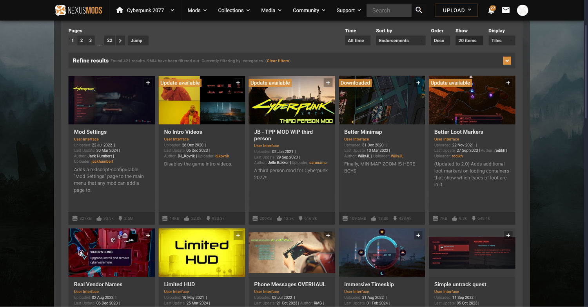
Visual Inspiration
Side-by-side analysis of the 2018 demo UI versus the shipped product revealed the earlier design made stronger use of scenic Night City imagery as a backdrop — an approach lost in the final release.
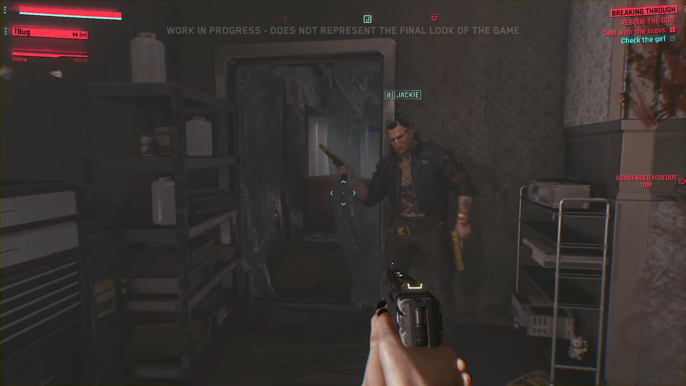
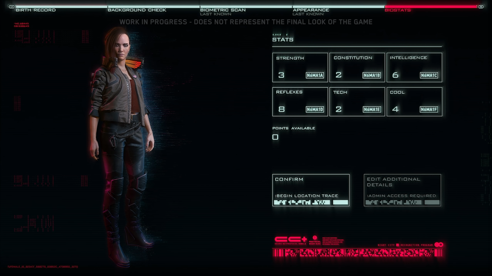
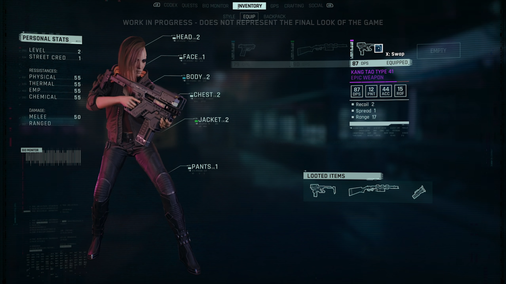
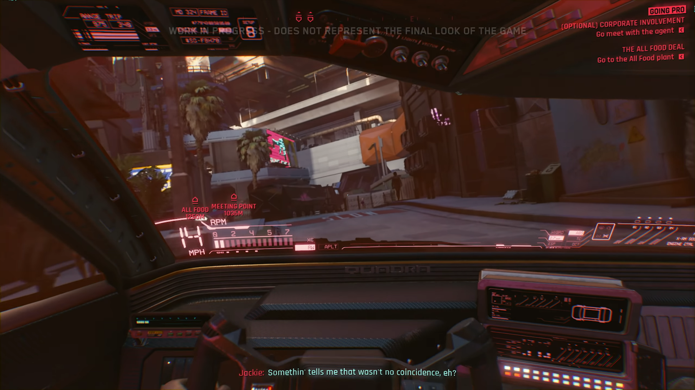
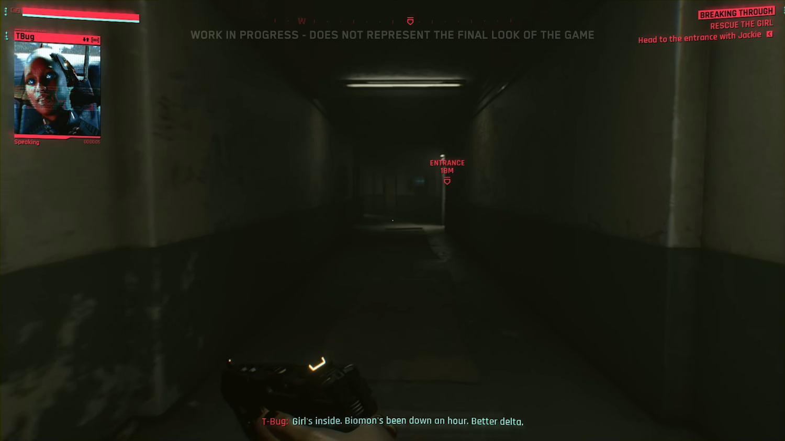
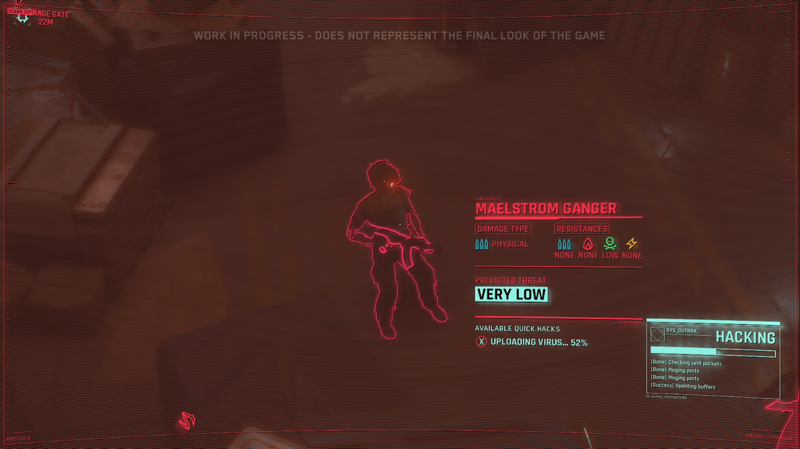
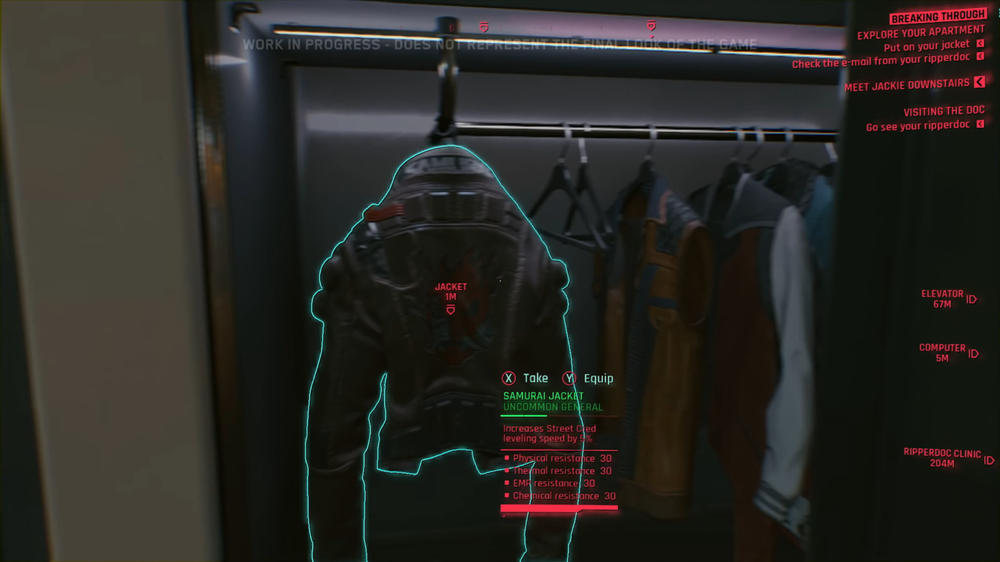
Proposed User Flow
I mapped out the experience from the moment a player boots the game to the point where they enter the player menus to access their inventory.
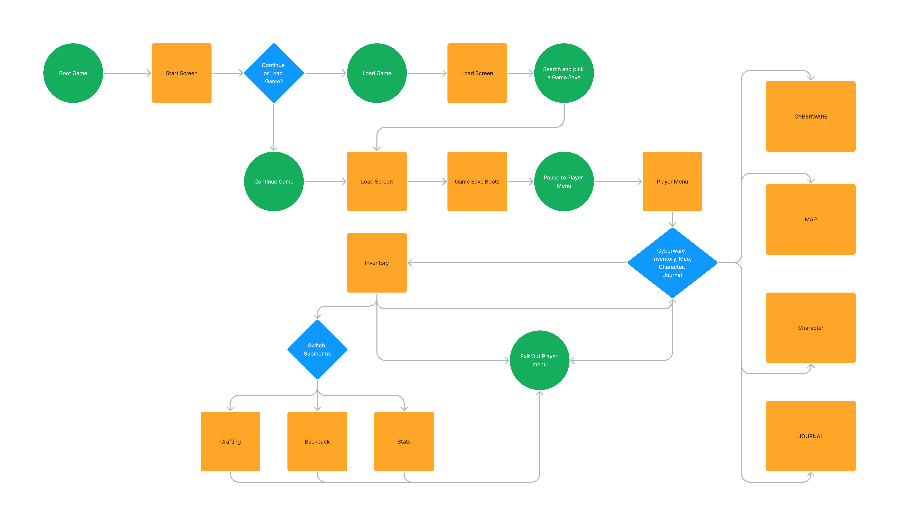
First Mockup Iterations
Initial designs used Night City scenic photography as full-bleed backgrounds with overlaid UI chrome. This approach leaned heavily into the world-as-UI aesthetic.


Community Feedback
Sharing within the CP2077 community surfaced consistent criticism:
- Felt cramped and "mobile-game-esque"
- Lack of clear indicating elements for selection states
- Colors were too oversaturated
- Condensed display font didn't read well at game resolution
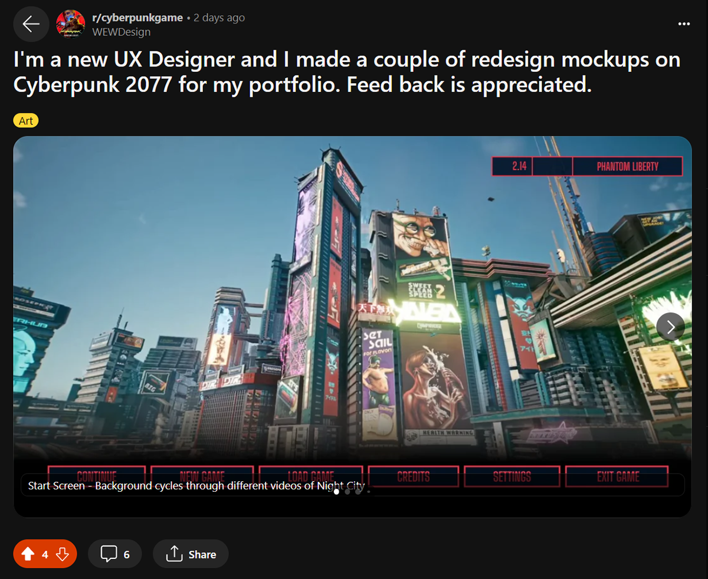
Typography & Design System
A revised type scale and element system were developed to address the readability and density issues found in the first round. Semi-transparent panels replaced full-bleed backgrounds, and a more deliberate accent-color hierarchy was applied.
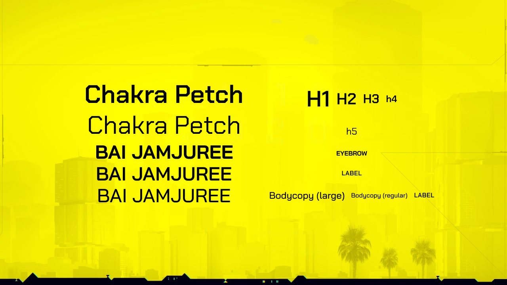

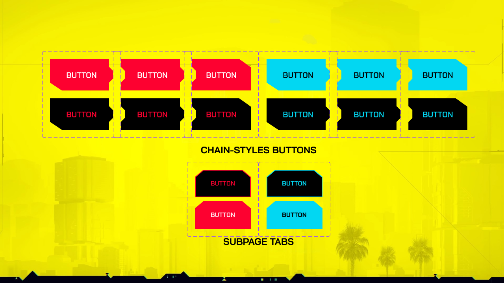
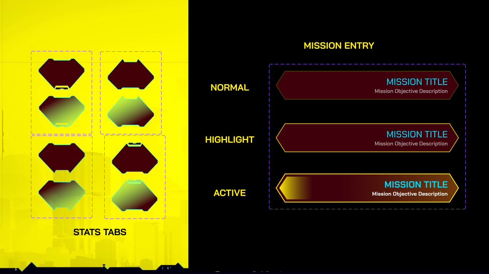
Final Design
Game Boot & Save Selection
The game boot screen redesign treats world design as the first selling point — dramatic scenic imagery is used from the first screen. The save selection screen allows filtering by lifepath (Corpo, Nomad, Street Kid), resolving a top modding community request.


Player Menu
The player menu uses semi-transparent backgrounds to keep Night City visible behind all menus. More vibrant but better-controlled colors were applied. The Journal was reorganized to separate World Lore from active Missions, and category navigation was simplified with persistent breadcrumbs.


Feedback fundamentally forced a rethinking of assumptions. The first iteration felt intuitive to design but received a clear response — back to the drawing board. This reinforced the value of community feedback loops in public-facing fan work.
Cyberpunk 2077 has an incredibly devoted fanbase who know the game intimately. Designing for them requires humility and willingness to defer to their experience. Not all design ideas that seem visually sound hold up under real user scrutiny.
The importance of a second opinion — especially from people with context you don't have — cannot be overstated.